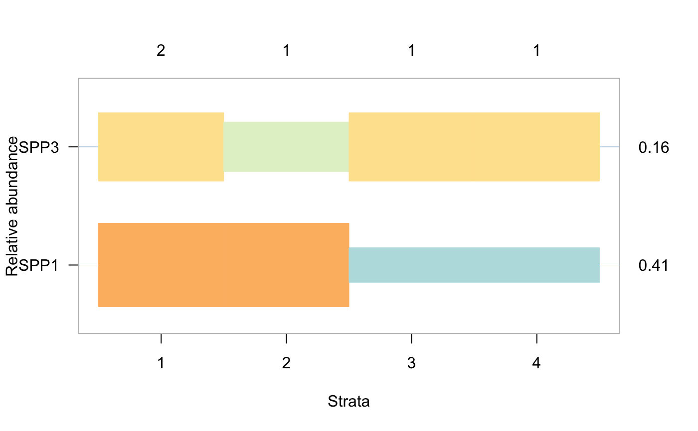
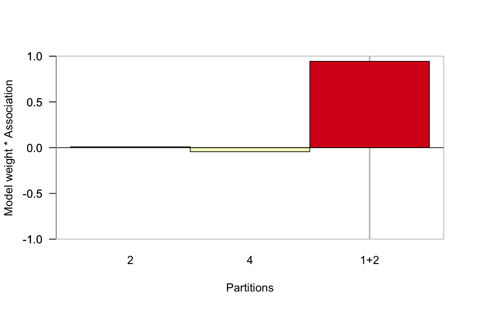

Optimal Binary Response Model
opticut.RdThe functions fits the multi-level response model for each species by finding the best binary partition based on model selection. Possibly controlling for modifying/confounding variables. The general algorithm is described in Kemencei et al. 2014.
opticut1(Y, X, Z, dist = "gaussian", sset=NULL, ...) opticut(...) # S3 method for default opticut(Y, X, strata, dist = "gaussian", comb = c("rank", "all"), sset=NULL, cl = NULL, ...) # S3 method for formula opticut(formula, data, strata, dist = "gaussian", comb = c("rank", "all"), sset=NULL, cl = NULL, ...) fix_levels(x, sep = "_") strata(object, ...) # S3 method for opticut strata(object, ...) # S3 method for opticut bestmodel(object, which = NULL, ...) # S3 method for opticut bestpart(object, pos_only = FALSE, ...) # S3 method for opticut getMLE(object, which, vcov=FALSE, ...) # S3 method for opticut subset(x, subset=NULL, ...) # S3 method for opticut fitted(object, ...) # S3 method for opticut predict(object, gnew=NULL, xnew=NULL, ...) wplot(x, ...) # S3 method for opticut1 wplot(x, cut, ylim = c(-1, 1), las=1, ylab = "Model weight * Association", xlab = "Partitions", theme, mar = c(5, 4, 4, 4) + 0.1, bty = "o", ...) # S3 method for opticut wplot(x, which = NULL, cut, sort, las = 1, ylab = "Model weight * Association", xlab = "Partitions", theme, mar = c(5, 4, 4, 4) + 0.1, bty = "o", ...) # S3 method for opticut plot(x, which = NULL, cut, sort, las, ylab = "Relative abundance", xlab = "Strata", show_I = TRUE, show_S = TRUE, hr = TRUE, tick = TRUE, theme, mar = c(5, 4, 4, 4) + 0.1, bty = "o", lower = 0, upper = 1, pos = 0, horizontal=TRUE, ...) # S3 method for opticut1 print(x, cut, sort, digits, ...) # S3 method for opticut print(x, digits, ...) # S3 method for summary.opticut print(x, cut, sort, digits, ...) # S3 method for opticut summary(object, ...) # S3 method for opticut as.data.frame(x, row.names = NULL, optional = FALSE, cut, sort, ...) # S3 method for summary.opticut as.data.frame(x, row.names = NULL, optional = FALSE, cut, sort, ...)
Arguments
| formula | two sided model formula, response species data (matrix,
or possible a vector for single species case) in the left-hand side,
model terms for modifying effects in the right-hand side
(its structure depending on the underlying functions).
For example, in the most basic Gaussian case it can be
|
|---|---|
| data | an optional data frame, list or environment containing the variables
in the model. If not found in data, the variables are taken from
|
| strata | vector (usually a factor), unique values define partitions (must have at least 2 unique levels, empty levels are dropped). It can also be a matrix with rows as observations and binary partitions as columns. |
| dist | character or function, a distribution to fit.
If character, it can follow one of these patterns: |
| comb | character, how to define the binary partitions.
|
| sset | an optional vector specifying a subset of observations (rows)
to be used in the fitting process. |
| cl | a cluster object, or an integer for multiple cores in parallel computations (integer value for forking is ignored on Windows). |
| Y | numeric vector of observations for |
| X | numeric, design matrix. Can be missing, in which case an intercept-only model is assumed. |
| Z | factor (must have at least 2 unique levels,
this triggers |
| x, object | object to plot, print, summarize. For |
| cut | log likelihood ratio value to be used as a cut-off for showing species whose log likelihood ratio is not less than the cut-off. |
| sort | logical value indicating if species/partitions
should be meaningfully sorted, the default is |
| show_I | logical, if indicator potential (I) should be shown. |
| show_S | logical, if number of indicator species should be shown. |
| hr, tick | logical, if horizontal rules ( |
| theme | color theme as defined by |
| mar | numeric, graphical parameters for plot margin |
| ylab, xlab, las, ylim | graphical arguments, see |
| bty | Character, determines the type of box which is drawn around plots,
see |
| lower, upper | numeric (between 0 and 1), |
| pos | numeric, position of rectangles in the plot relative to the baseline. Value must be in the [-1, 1] range (below vs. above baseline). |
| horizontal | logical, plot orientation: species as rows ( |
| digits | numeric, number of significant digits in output. |
| which | numeric or character (can be a vector) defining
a subset of species from the fitted object,
or |
| sep | a character string to separate the sub-strings in factor levels. |
| row.names |
|
| optional | logical. If |
| pos_only | logical, best partition normally returns the original variable without
recognizing the direction of the association.
|
| subset | logical, numeric, or character index indicating species to keep,
missing values are not accepted. The default |
| vcov | logical, if variance-covariance matrix is to be returned. |
| gnew, xnew | new values for |
| ... | other arguments passed to the underlying functions. |
Details
Currently available distributions:
"gaussian"real valued continuous observations, e.g. biomass, uses
lmof the stats package. Identity link is assumed. Centering modified variables is generally advised to avoid negative expected values when the response is nonnegative."poisson"Poisson count data, uses
glmof the stats package. Exponential (log) link is assumed."binomial"presence-absence (detection-nondetection) type data, uses
glmof the stats package. Logistic (logit) link is assumed."negbin"overdispersed Negative Binomial count data, uses
glm.nbof the MASS package. Exponential (log) link is assumed."beta"continuous response in the unit interval (0-1), e.g. percent cover, uses
betaregof the betareg package. Logistic (logit) link for the mean model is assumed."zip"zero-inflated Poisson counts, indicative properties are tested as part of the abundance model, uses
zeroinflof the pscl package. Exponential (log) link is used for count based analysis, the second part of thedistargument following the colon is used as link function for the zero component (logistic link assumed)."zinb"zero-inflated Negative Binomial counts, indicative properties are tested as part of the abundance model, uses
zeroinflof the pscl package. The zero-inflation component refers to the probability of 0. Exponential (log) link is used for count based analysis, the second part of thedistargument following the colon is used as link function for the zero component (logistic link assumed)."zip2"zero-inflated Poisson counts, indicative properties are tested as part of the zero-model, uses
zeroinflof the pscl package. The zero-inflation component refers to the probability of 1 to be consistent with other methods regarding positive and negative effects. Logistic (logit) link is assumed for zero-nonzero based analysis, only symmetric link functions (logit, probit) allowed. Exponential (log) link is used for the count data part which cannot be changed."zinb2"zero-inflated Negative Binomial counts, indicative properties are tested as part of the zero-model, uses
zeroinflof the pscl package. The zero-inflation component refers to the probability of 1 to be consistent with other methods regarding positive and negative effects. Logistic (logit) link is assumed for zero-nonzero based analysis, only symmetric link functions (logit, probit) allowed. Exponential (log) link is used for the count data part which cannot be changed."rsf"presence-only data using resource selection functions (RSF) as explained in
rsfin the ResourceSelection package, assuming global availability (m = 0). The"rsf"works only for single species usingopticut1because 'presence-only' type data cannot be kept in a single matrix-like object for multiple species. Intercept only model (i.e. no modifier variables in right-hand-side of the formula) is accepted for"rsf". Exponential (log) link is assumed."rspf"presence-only data using resource selection probability functions (RSPF) as explained in
rspfin the ResourceSelection package, assuming global availability (m = 0). The"rspf"works only for single species usingopticut1because 'presence-only' type data cannot be kept in a single matrix-like object for multiple species. Intercept only model is not accepted for"rspf", need to have at least one continuous modifier variable for identifiability (see Solymos & Lele 2016). Logistic (logit) link is assumed.
Custom distributions can be defined, see Examples. Note: not all downstream algorithms and methods work with custom distributions.
fix_levels is a utility function for replacing characters in
factor levels that are identical to the value of the
getOption("ocoptions")$collapse value.
This case can lead to an error when specifying the strata argument,
and the fix_levels can help.
Warning
The use of the opticut1 function is generally discouraged:
some of the internal checks are not guaranteed to
flag issues when the formula-to-model-matrix translation is side-stepped
(this is what is happening when the modifier variables are supplied
as X argument in opticut1).
Use the opticut with a single species instead.
Value
opticut1 returns an object of class opticut1, that is a modified
data frame with additional attributes.
opticut returns an object of class opticut, that is a list
with the following components:
"call"the function call.
"species"a list of species specific opticut1 objects.
"X"modifying variables as model matrix.
"Y"response, single species vector or matrix.
"strata"defines the partitions.
"nobs"sample size.
"sset"subset, if specified.
"nsplit"number of binary splits considered.
"dist"distribution.
"comb"combination type.
"failed"IDs for failed species models dropped from results list.
"collapse"character used for combining partition labels.
fix_levels returns a factor with modified levels.
The strata method extracts the strata argument
as factor. The method finds unique row combinations
when custom matrix is supplied for strata.
The print and summary methods are called for their side effects.
The summary shows the following information:
best supported split, strength and sign of association,
indicator potential (I), expected values (mu0, mu1),
log likelihood ratio (logLR), and model weights(w).
The subset method subsets the species in the opticut object.
The plot method presents the contrasts by species and strata.
The wplot (weight plot) shows model weights for partitions.
bestpart returns a matrix with the best supported
partitions for each species (samples and rows, species as columns).
bestmodel returns the best supported model for further
manipulation (e.g. prediction). Note: custom distribution
functions are designed to return only point estimates,
thus the best model cannot be returned. In this case,
use the best partition returned by bestpart to refit the model.
getMLE returns a named list corresponding to the best supported
model. The list has the following elements:
coef is the Maximum Likelihood Estimate (MLE),
vcov is the variance-covariance matrix for the MLE or NULL,
dist is the distribution inherited from input object.
fitted returns expected values on the predictor scale
for the observations as a matrix (number of observations by number of species).
predict returns fitted values when both gnew
and xnew are NULL, or corresponding point predictions
(expected values) on the predictor scale
(available for comb = "rank" models only).
The coercion methods as.data.frame return a data frame.
References
Kemencei, Z., Farkas, R., Pall-Gergely, B., Vilisics, F., Nagy, A., Hornung, E. & Solymos, P. (2014): Microhabitat associations of land snails in forested dolinas: implications for coarse filter conservation. Community Ecology 15:180--186. <doi:10.1556/ComEc.15.2014.2.6>
Solymos, P. & Lele, S. R. (2016): Revisiting resource selection probability functions and single-visit methods: clarification and extensions. Methods in Ecology and Evolution 7:196--205. <doi:10.1111/2041-210X.12432>
See also
allComb, and rankComb
for partitioning algorithms.
beta2i for indicator potential (I) calculations in summaries.
bestmodel, bestpart, and uncertainty
for manipulating fitted objects.
ocoptions on how to set some of the global options
related to the presentation of the results in the package
and how errors encountered during model fitting are handled.
multicut for multinomial-response model,
optilevels for finding the optimal number of factor levels.
Examples
## --- Gaussian ## simple example from Legendre 2013 ## Indicator Species: Computation, in ## Encyclopedia of Biodiversity, Volume 4 ## http://dx.doi.org/10.1016/B978-0-12-384719-5.00430-5 gr <- as.factor(paste0("X", rep(1:5, each=5))) spp <- cbind(Species1=rep(c(4,6,5,3,2), each=5), Species2=c(rep(c(8,4,6), each=5), 4,4,2, rep(0,7)), Species3=rep(c(18,2,0,0,0), each=5)) rownames(spp) <- gr ## must add some noise to avoid perfect fit spp[6, "Species1"] <- 7 spp[1, "Species3"] <- 17 spp#> Species1 Species2 Species3 #> X1 4 8 17 #> X1 4 8 18 #> X1 4 8 18 #> X1 4 8 18 #> X1 4 8 18 #> X2 7 4 2 #> X2 6 4 2 #> X2 6 4 2 #> X2 6 4 2 #> X2 6 4 2 #> X3 5 6 0 #> X3 5 6 0 #> X3 5 6 0 #> X3 5 6 0 #> X3 5 6 0 #> X4 3 4 0 #> X4 3 4 0 #> X4 3 2 0 #> X4 3 0 0 #> X4 3 0 0 #> X5 2 0 0 #> X5 2 0 0 #> X5 2 0 0 #> X5 2 0 0 #> X5 2 0 0#> Multivariate opticut results, comb = all, dist = gaussian #> #> Call: #> opticut.formula(formula = spp ~ 1, strata = gr, dist = "gaussian", #> comb = "all") #> #> Best supported models with logLR >= 2: #> split assoc I mu0 mu1 logLR w #> Species2 X1+X3 +++ 0.9866 2.0 7.0 14.82 0.4995 #> Species1 X2+X3 +++ 0.8617 3.0 5.6 16.74 0.7035 #> Species3 X1 +++ 1.0000 0.5 17.8 54.26 1.0000 #> 15 binary splits #>#> Multivariate opticut results, comb = all, dist = gaussian #> #> Call: #> opticut.default(Y = spp, strata = gr, dist = "gaussian", comb = "all") #> #> Best supported models with logLR >= 2: #> split assoc I mu0 mu1 logLR w #> Species2 X1+X3 +++ 0.9866 2.0 7.0 14.82 0.4995 #> Species1 X2+X3 +++ 0.8617 3.0 5.6 16.74 0.7035 #> Species3 X1 +++ 1.0000 0.5 17.8 54.26 1.0000 #> 15 binary splits #>## rank based partitions summary(ocrank <- opticut(spp ~ 1, strata=gr, dist="gaussian", comb="rank"))#> Multivariate opticut results, comb = rank, dist = gaussian #> #> Call: #> opticut.formula(formula = spp ~ 1, strata = gr, dist = "gaussian", #> comb = "rank") #> #> Best supported models with logLR >= 2: #> split assoc I mu0 mu1 logLR w #> Species2 X1+X3 +++ 0.9866 2.0 7.0 14.82 0.4996 #> Species1 X2+X3 +++ 0.8617 3.0 5.6 16.74 0.7036 #> Species3 X1 +++ 1.0000 0.5 17.8 54.26 1.0000 #> 4 binary splits #>#> Multivariate opticut results, comb = rank, dist = gaussian #> #> Call: #> opticut.default(Y = spp, strata = gr, dist = "gaussian", comb = "rank") #> #> Best supported models with logLR >= 2: #> split assoc I mu0 mu1 logLR w #> Species2 X1+X3 +++ 0.9866 2.0 7.0 14.82 0.4996 #> Species1 X2+X3 +++ 0.8617 3.0 5.6 16.74 0.7036 #> Species3 X1 +++ 1.0000 0.5 17.8 54.26 1.0000 #> 4 binary splits #>## --- Binomial ## simulated binary data set.seed(1234) n <- 200 x0 <- sample(1:4, n, TRUE) x1 <- ifelse(x0 <= 2, 1, 0) x2 <- rnorm(n, 0.5, 1) p1 <- plogis(-0.5 + 2*x1 + -0.8*x2) Y1 <- rbinom(n, 1, p1) p2 <- plogis(-0.1 + 2*ifelse(x0==4,1,0) + -0.8*x2) Y2 <- rbinom(n, 1, p2) p3 <- plogis(-0.1 + -0.8*x2) Y3 <- rbinom(n, 1, p3) Y <- cbind(SPP1=Y1, SPP2=Y2, SPP3=Y3) X <- model.matrix(~x2) ## all partitions, single species Z <- allComb(x0) opticut1(Y1, X, Z, dist="binomial")#> Univariate opticut results, comb = all, dist = binomial #> I = 0.7139; w = 0.9989; H = 0.9978; logL_null = -132.3 #> #> Best supported models with logLR >= 2: #> assoc I mu0 mu1 logLR w #> 1+2 +++ 0.7139 0.3389 0.7544 16.807 9.989e-01 #> 4 --- 0.6557 0.6465 0.2755 9.764 8.724e-04 #> 2 +++ 0.5952 0.4594 0.7700 8.336 2.091e-04 #> 1 ++ 0.4260 0.4986 0.7118 3.165 1.188e-06 #> 3 -- 0.3744 0.5914 0.3972 2.500 6.111e-07 #> 7 binary splits (2 models not shown) #>#> Univariate opticut results, comb = rank, dist = binomial #> I = 0.7139; w = 0.9989; H = 0.9978; logL_null = -132.3 #> #> Best supported models with logLR >= 2: #> assoc I mu0 mu1 logLR w #> 1+2 +++ 0.7139 0.3389 0.7544 16.807 0.9989185 #> 1+2+3 +++ 0.6557 0.2755 0.6465 9.764 0.0008724 #> 2 +++ 0.5952 0.4594 0.7700 8.336 0.0002091 #> 3 binary splits #>## all partitions, multiple species (m1 <- opticut(Y ~ x2, strata=x0, dist="poisson", comb="all"))#> Multivariate opticut results, comb = all, dist = poisson #> #> Call: #> opticut.formula(formula = Y ~ x2, strata = x0, dist = "poisson", #> comb = "all") #> #> 3 species, 7 binary splits #>summary(m1)#> Multivariate opticut results, comb = all, dist = poisson #> #> Call: #> opticut.formula(formula = Y ~ x2, strata = x0, dist = "poisson", #> comb = "all") #> #> Best supported models with logLR >= 2: #> split assoc I mu0 mu1 logLR w #> SPP1 1+2 +++ 0.4137 0.3118 0.7518 8.340 0.9438 #> SPP2 4 ++ 0.3370 0.4550 0.9175 5.664 0.8333 #> 7 binary splits #> 1 species not shown #>#> Multivariate opticut results, comb = all, dist = poisson #> #> Call: #> opticut.formula(formula = Y ~ x2, strata = x0, dist = "poisson", #> comb = "all") #> #> Best supported models with logLR >= 2: #> split assoc I mu0 mu1 logLR w #> SPP1 1+2 +++ 0.4137 0.3118 0.7518 8.340 0.9438 #> SPP2 4 ++ 0.3370 0.4550 0.9175 5.664 0.8333 #> 7 binary splits #> 1 species not shown #>## model weights for all species wplot(m1)## different ways of plotting weights for single species wplot(m1$species[[1]])wplot(m1, which = 1)## rank based partitions, multiple species summary(m2 <- opticut(Y ~ x2, strata=x0, dist="poisson", comb="rank"))#> Multivariate opticut results, comb = rank, dist = poisson #> #> Call: #> opticut.formula(formula = Y ~ x2, strata = x0, dist = "poisson", #> comb = "rank") #> #> Best supported models with logLR >= 2: #> split assoc I mu0 mu1 logLR w #> SPP1 1+2 +++ 0.4137 0.3118 0.7518 8.340 0.9462 #> SPP2 4 ++ 0.3370 0.4550 0.9175 5.664 0.8687 #> 3 binary splits #> 1 species not shown #>#> Multivariate opticut results, comb = rank, dist = poisson #> #> Call: #> opticut.formula(formula = Y ~ x2, strata = x0, dist = "poisson", #> comb = "rank") #> #> Best supported models with logLR >= 2: #> split assoc I mu0 mu1 logLR w #> SPP1 1+2 +++ 0.4137 0.3118 0.7518 8.340 0.9462 #> SPP2 4 ++ 0.3370 0.4550 0.9175 5.664 0.8687 #> 3 binary splits #>#> SPP1 SPP2 SPP3 #> 4 0 1 1 #> 4 0 1 1 #> 2 1 0 0 #> 2 1 0 0 #> 1 1 0 1 #> 4 0 1 1#> $SPP1 #> #> Call: stats::glm(formula = Y ~ . - 1, family = Family, data = XX) #> #> Coefficients: #> `(Intercept)` Z1 x2 #> -1.1653 0.8801 -0.2521 #> #> Degrees of Freedom: 200 Total (i.e. Null); 197 Residual #> Null Deviance: 212 #> Residual Deviance: 119.3 AIC: 313.3 #> #> $SPP2 #> #> Call: stats::glm(formula = Y ~ . - 1, family = Family, data = XX) #> #> Coefficients: #> `(Intercept)` Z1 x2 #> -0.7875 0.7014 -0.3343 #> #> Degrees of Freedom: 200 Total (i.e. Null); 197 Residual #> Null Deviance: 200 #> Residual Deviance: 116.4 AIC: 322.4 #> #> $SPP3 #> #> Call: stats::glm(formula = Y ~ . - 1, family = Family, data = XX) #> #> Coefficients: #> `(Intercept)` Z1 x2 #> -1.1635 0.3235 -0.5092 #> #> Degrees of Freedom: 200 Total (i.e. Null); 197 Residual #> Null Deviance: 266 #> Residual Deviance: 126.8 AIC: 266.8 #>#>#> 2.5 % 97.5 % #> `(Intercept)` -1.5658931 -0.81050022 #> Z1 0.4493567 1.33725540 #> x2 -0.4472278 -0.05197309#> $coef #> `(Intercept)` Z1 x2 #> -1.1652948 0.8800652 -0.2520902 #> #> $vcov #> `(Intercept)` Z1 x2 #> `(Intercept)` 0.036867825 -0.0356672658 -0.0034330887 #> Z1 -0.035667266 0.0508649662 -0.0001321465 #> x2 -0.003433089 -0.0001321465 0.0101950604 #> #> $dist #> [1] "poisson" #>#> SPP1 SPP2 SPP3 #> 1 0.2476256 0.6758558 0.2709819 #> 2 0.3098497 0.9098139 0.4261917 #> 3 0.6518694 0.3765488 0.2341692 #> 4 0.7523114 0.4553558 0.3127900 #> 5 0.8162386 0.5073633 0.5096759 #> 6 0.2635700 0.7341598 0.3073866#> SPP1 SPP2 SPP3 #> 1 0.2476256 0.6758558 0.2709819 #> 2 0.3098497 0.9098139 0.4261917 #> 3 0.6518694 0.3765488 0.2341692 #> 4 0.7523114 0.4553558 0.3127900 #> 5 0.8162386 0.5073633 0.5096759 #> 6 0.2635700 0.7341598 0.3073866if (FALSE) { ## --- Zero-inflated Negative Binomial ## dolina example data(dolina) ## stratum as ordinal dolina$samp$stratum <- as.integer(dolina$samp$stratum) ## filter species to speed up things a bit Y <- dolina$xtab[,colSums(dolina$xtab > 0) >= 20] ## opticut results, note the cloglog link function dol <- opticut(Y ~ stratum + lmoist + method, data=dolina$samp, strata=dolina$samp$mhab, dist="zinb:cloglog") summary(dol) ## vertical plot orientation plot(dol, horizontal=FALSE, pos=1, upper=0.8) ## parallel computing comparisons library(parallel) cl <- makeCluster(2) ## sequential, all combinations (2^(K-1) - 1) system.time(opticut(Y ~ stratum + lmoist + method, data=dolina$samp, strata=dolina$samp$mhab, dist="zinb", comb="all", cl=NULL)) ## sequential, rank based combinations (K - 1) system.time(opticut(Y ~ stratum + lmoist + method, data=dolina$samp, strata=dolina$samp$mhab, dist="zinb", comb="rank", cl=NULL)) ## parallel, all combinations (2^(K-1) - 1) system.time(opticut(Y ~ stratum + lmoist + method, data=dolina$samp, strata=dolina$samp$mhab, dist="zinb", comb="all", cl=cl)) ## parallel, rank based combinations (K - 1) system.time(opticut(Y ~ stratum + lmoist + method, data=dolina$samp, strata=dolina$samp$mhab, dist="zinb", comb="rank", cl=cl)) stopCluster(cl) ## --- Customizing distributions ## we may want to expand the Zero-inflation component in a ZIP model ## see how the return value needs to be structured fun <- function(Y, X, linkinv, zi_term, ...) { X <- as.matrix(X) mod <- pscl::zeroinfl(Y ~ X-1 | zi_term, dist = "poisson", ...) list(coef=coef(mod), logLik=logLik(mod), linkinv=mod$linkinv) } Xdol <- model.matrix(~ stratum + lmoist + method, data=dolina$samp) ## this fits the null model (i.e. no partitions added) fun(Y[,"amin"], Xdol, zi_term=dolina$samp$method) ## now we can use dist=fun opticut1(Y[,"amin"], Xdol, Z=dolina$samp$mhab, dist=fun, zi_term=dolina$samp$method) dol2 <- opticut(Y ~ stratum + lmoist + method, data=dolina$samp, strata=dolina$samp$mhab, dist=fun, zi_term=dolina$samp$method) summary(dol2) } ## current collapse value getOption("ocoptions")$collapse#> [1] "+"## factor levels sometimes need to be manipulated ## before feeding it to opticut fix_levels(as.factor(c("A b", "C d")), sep=":")#> [1] A b C d #> Levels: A b C d#> [1] A b C d #> Levels: A b C d